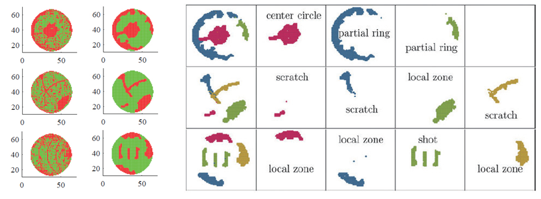

주제별 연구성과
주제별 연구성과
KAIST RESEARCH ACHIEVEMENTS
반도체 웨이퍼 내 혼합된 형태의 결함 패턴 탐지 및 분류 방법 개발
산업및시스템공학과 김희영
요약
반도체 제조 공정에서 각 칩의 불량 여부 테스트 결과에 따라 일정값을 부여한 맵을 웨이퍼빈맵이라고 한다. 웨이퍼빈맵의 불량칩 패턴은 공정 이상 원인에 따라 다르게 형성된다고 알려져 있다. 불량칩의 분포 패턴을 분석하는 것은 공정 이상을 탐지하고 그 원인을 파악하는데 중요한 단서를 제공한다. 최근 반도체 제조 공정이 점점 복잡해 짐에 따라 한 웨이퍼 안에 여러 형태의 불량칩 패턴이 혼재되어 있는 경우가 증가하게 되었다. 이러한 경우, 1) 사전에 서로 다른 몇 개의 패턴이 혼재되어 있는지 알지 못한다는 점, 2) 각 패턴이 복잡한 모양을 가진다는 점, 3) 일정 패턴을 형성하지 않고 랜덤하게 분포하는 불량칩이 패턴 탐지를 방해하는 점이 어려움으로 작용한다. 본 연구에서는 일정 패턴을 형성하는 불량칩을 탐지하는 필터링 기술을 개발하고, 데이터 스스로 패턴 수를 결정하되 복잡한 모양의 실제 패턴을 데이터의 잠재공간에서 단순한 모양으로 변환시켜 효과적으로 분류하는 방법을 제안하였다.
연구배경
반도체 웨이퍼 제조공정은 웨이퍼 표면에 집적회로를 형성하는 복잡한 일련의 공정으로 구성된다. 웨이퍼 제조가 끝난 후 웨이퍼 내 각 칩의 불량 여부를 테스트해서 테스트 결과에 따라 일정값을 부여한 맵을 웨이퍼빈맵이라고 한다. 이때 웨이퍼빈맵의 불량칩 패턴은 공정 이상 원인에 따라 다르게 (예: 원, 링, 스크래치 등) 형성된다고 알려져 있다. 따라서 불량칩의 분포 패턴을 분석하는 것은 공정 이상을 탐지하고 그 원인을 파악하는데 중요한 단서를 제공한다. 최근 반도체 제조 공정이 점점 복잡해 짐에 따라 한 웨이퍼 안에 여러 형태의 불량칩 패턴이 혼재되어 있는 경우가 증가하게 되었다. 이러한 경우 1) 사전에 서로 다른 몇 개의 패턴이 혼합되어 있는지 알지 못하고, 2) 각각의 패턴이 복잡한 모양을 가질 수 있으며, 3) 패턴을 형성하지 않고 랜덤하게 분포하는 불량칩이 노이즈로 작용하여 패턴 탐지를 방해할 수 있어서, 몇 개의 어떤 패턴이 존재하는지 정확히 분석하는 것이 어려워졌다.
본 연구에서는 위와 같이 여러 형태의 불량칩 패턴이 혼합되어 있는 웨이퍼빈맵에서 자동으로 패턴을 탐지하고 분류하는 방법을 개발하였다. 먼저, 랜덤 분포가 아닌 일정 패턴을 형성하고 있는 불량칩을 효과적으로 탐지할 수 있는 connected-path filtering (CPF) 방법을 개발하였다. CPF 방법은, 특히 스크래치 (가늘고 긴 선) 형태로 분포하는 불량칩을 탐지하는 데 있어서 기존 방법에 비해 탁월한 성능향상을 보였다. 또한, CPF 방법으로 탐지된 불량칩들을 다수의 패턴 별로 분류하기 위해서 infinite warped mixture model을 이용할 것을 제안하였다. 그리하여 분류 과정에서 데이터가 스스로 패턴 수를 결정할 수 있도록 하였으며, 복잡한 모양의 실제 패턴을 바로 이용하는 대신 데이터의 잠재공간(latent space)에서의 단순한 모양의 패턴을 이용함으로써 보다 효과적으로 다수의 복잡한 모양의 불량칩 패턴을 분류할 수 있도록 하였다. 실제 반도체 회사에서 수집한 웨이퍼빈맵 데이터를 이용하여 제안하는 방법의 탁월한 성능을 검증하였다.

기대효과
이전에는 웨이퍼 한 장에 하나의 불량패턴만 있는 단순한 경우를 가정하여 연구가 진행되어, 여러 형태의 불량패턴이 혼합된 현실적인 상황에서는 실제로 적용하는 데 한계가 있었다. 본 연구에서는 실제 반도체 현장에서 수집한 여러 형태의 불량패턴이 혼합된 웨이퍼빈맵 데이터를 가정하여 연구를 진행하고 결과를 검증하였다. 과거에는 웨이퍼 테스트 후 전문가가 일일이 웨이퍼빈맵 데이터를 눈으로 확인하면서 공정이상 여부를 판단하였다. 본 연구에서 제안하는 방법을 이용하면 여러 불량패턴이 혼합되어 있는 경우에도 자동으로 몇 개의 서로 다른 패턴이 존재하는지 탐지 가능하게 되어, 이전 공정에서 어떠한 공정 이상이 있었는지 쉽게 파악하고 문제를 해결할 수 있다. 이로써 반도체 공정에서 비용을 절감하고 품질을 향상시킬 수 있으며, 우리나라 반도체 산업의 중요성을 생각할 때 큰 경제적인 효과를 기대할 수 있다.
연구성과
[논문] J. Kim, Y. Lee, and H. Kim (2018), “Detection and clustering of mixed-type defect patterns in wafer bin maps,” IISE Transactions, 50(2),99-111. (Selected as a featured article)
[국제산업공학회 매거진 특집기사] J. Kim, Y. Lee, and H. Kim (2018), “Can different defect patterns be recognized when they are mixed over a wafer?”, IISE magazine, January, 2018
[언론 보도] YTN 뉴스, YTN 사이언스 포함 다수의 언론보도
연구비지원
National Research Foundation of Korea (NRF), 2015R1C1A1A02037090